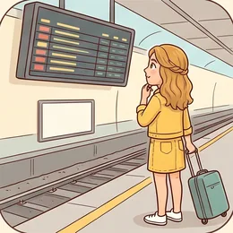
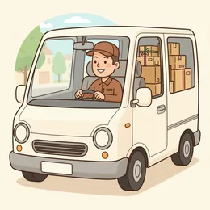
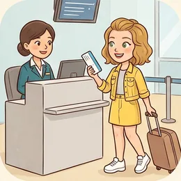

deutschoderwas · Sprechclub · Woche 2 · Strang B · Teil 1 ·
GEHEN, KOMMEN, FAHREN — wohin und womit
Drei Verben, und du bist überall in Deutschland unterwegs. Das Schwere daran ist nicht das Verb — es sind die zwei kleinen Wörter davor: zu oder nach, in oder an.
Dein Niveau
Gleiches Thema, andere Sätze. Wechsle jederzeit — probier ruhig beide Seiten aus.
Drei Verben, und du kommst überall hin
Wer gehen, kommen und fahren sicher benutzt, braucht für den halben Alltag kein anderes Verb. Der Unterschied ist einfacher, als er aussieht.

Wie bist du heute zum Kurs gekommen — zu Fuß, mit dem Bus, mit dem Auto?
Wohin gehst du in deiner Stadt am liebsten?
Fährst du gern Zug? Warum, warum nicht?
Was sagt es über eine Stadt aus, wie die Leute dort unterwegs sind?
Gibt es in deiner Sprache auch drei verschiedene Verben dafür?
Wann hast du das letzte Mal jemanden vom Bahnhof abgeholt?
🧭 Der ganze Unterschied in einem Satz:gehen = auf den eigenen Füßen. fahren = mit etwas, das Räder hat. kommen = die Richtung ist dorthin, wo der Sprecher ist.
Zwei Fragen, und der Satz steht
Fast jeder Satz über Bewegung beantwortet nur zwei Fragen: Wohin? und Womit? Wer sich das merkt, baut den Rest von allein.
Sag in einem Satz: Wohin fährst du morgen und womit?
Wohin gehst du nie zu Fuß?
Wann sagt man „ich komme“ und wann „ich gehe“ — obwohl es dieselbe Bewegung ist?
Welche Präposition macht dir am meisten Ärger: zu, nach oder in?
💡 Merk dir das Paar:Wohin? → zu, nach, in, an, auf. Womit? → immer mit + Dativ: mit dem Bus, mit der Bahn, mit dem Rad. Und für die Füße: zu Fuß, ganz ohne Artikel.
Zwölf Verbindungen mit gehen, kommen und fahren
Sagt jede Verbindung laut — und gleich den Beispielsatz hinterher. Nicht das Verb lernen, sondern das Paar aus Präposition und Verb.
zu Fuß gehen
„Bei dem Wetter gehe ich lieber zu Fuß.“
💡 zu Fuß steht ohne Artikel — das ist eine feste Wendung. Nicht „mit dem Fuß“, das wäre ein einzelner Fuß.
mit dem Bus fahren
„Ich fahre jeden Morgen mit dem Bus zur Arbeit.“
💡 Nach mit kommt immer Dativ: mit dem Bus, mit der Bahn, mit dem Fahrrad. Der Artikel darf nie fehlen.
nach Hause kommen
„Ich komme heute erst um acht nach Hause.“
💡 Die eine Ausnahme, die alle kennen müssen: nach Hause (Bewegung) — zu Hause (schon dort). Immer ohne Artikel.
zum Arzt gehen
„Ich gehe morgen zum Arzt.“
💡 Bei Personen und Berufen immer zu: zum Arzt, zum Chef, zu meiner Schwester. Nie „in den Arzt“.
in die Stadt fahren
„Am Samstag fahren wir in die Stadt.“
💡 in heißt: du gehst hinein. Deshalb Akkusativ: in die Stadt, in den Park, in das Kino (ins Kino).
an die Küste fahren
„Im Sommer fahren wir immer an die Küste.“
💡 an benutzt man bei Rändern und Kanten: an die Küste, an den See, an den Strand. Auch hier Akkusativ.
einkaufen gehen
„Ich gehe schnell einkaufen.“
💡 gehen + Infinitiv ist eine ganze Familie: einkaufen gehen, schwimmen gehen, essen gehen, spazieren gehen. Kein „zu“ dazwischen.
geradeaus gehen
„Gehen Sie geradeaus bis zur Kreuzung.“
💡 Die drei Wegwörter: geradeaus, links, rechts. Und immer bis zu + Dativ: bis zur Ampel, bis zum Bahnhof.
umsteigen
„In Hagen musst du einmal umsteigen.“
💡 Trennbar: Ich steige in Köln um. Perfekt mit sein: Ich bin umgestiegen. — wie alle Bewegungsverben.
vorbeikommen
„Komm doch heute Abend kurz vorbei!“
💡 Sehr freundlich und sehr deutsch. Komm vorbei heißt: kein großer Besuch, nur kurz. Auch: Ich schaue mal vorbei.
abholen
„Ich hole dich um sieben vom Bahnhof ab.“
💡 Immer von + Dativ für den Ort: vom Bahnhof, von der Schule, von der Arbeit. Trennbar: Ich hole dich ab.

los
„Wann fahren wir los?“
💡 los hängt sich an viele Verben: losfahren, losgehen, loslaufen. Und allein bedeutet es: „Fang an!“ — Na los!
💡 Spiel: Einer nennt ein Ziel („der Bahnhof“, „meine Mutter“, „der See“). Der andere baut in zwei Sekunden den Satz — mit dem richtigen kleinen Wort davor. Wer zögert, gibt ab.
gehen, fahren, kommen — wann welches?
Erst die drei Verben und was sie wirklich unterscheiden. Darunter drei Satzpaare, bei denen fast alle danebenliegen.
🚶
gehen
Auf den eigenen Füßen — oder als feste Wendung.
Ich gehe zur Arbeit. · Wir gehen ins Kino.
🚌
fahren
Mit etwas, das Räder hat. Auch: selbst steuern.
Ich fahre mit dem Bus. · Sie fährt Auto.
🏠
kommen
Die Richtung geht dorthin, wo der Zuhörer ist.
Ich komme um acht. · Kommst du mit?
✅ So sagt man es
Ich fahre nach Hause.
Warum das stimmtnach Hause ist eine feste Wendung für die Bewegung dorthin. Ohne Artikel, ohne Ausnahme.
❌ So nicht
Ich fahre zu Hause.
Das Problemzu Hause heißt: du bist schon dort. Merksatz: nach Hause fahren, zu Hause bleiben.
✅ So sagt man es
Ich gehe zum Arzt.
Warum das stimmtBei Personen — auch bei Berufen — steht immer zu + Dativ: zum Arzt, zum Friseur, zu meiner Oma.
❌ So nicht
Ich gehe in den Arzt.
Das Problemin heißt „hinein“ — in einen Menschen geht man nicht. Nur beim Gebäude geht beides: in die Praxis.
✅ So sagt man es
Wir fahren mit dem Auto.
Warum das stimmtmit + Dativ + Artikel. Der Artikel gehört dazu, auch wenn er im Deutschen unwichtig klingt.
❌ So nicht
Wir fahren mit Auto.
Das ProblemOhne Artikel klingt es wie eine Materialangabe. Die einzige Ausnahme ohne Artikel ist zu Fuß.
Frag dich nur, was das Ziel ist:
Ein Mensch (Arzt, Chef, Freundin) → zu + Dativ: zum Arzt, zu Anna.
Eine Stadt oder ein Land ohne Artikel (Berlin, Italien) → nach: nach Berlin, nach Italien.
Ein Raum oder ein Gebäude, in das man hineingeht → in + Akkusativ: ins Kino, in die Schule.
Ein Rand: See, Meer, Fenster → an + Akkusativ: an den See, ans Meer.
Und die zwei Wendungen, die keiner Regel folgen: nach Hause und zu Fuß. Die lernt man einfach auswendig.
⚖️ Kurzübung: Einer nennt ein Ziel, der andere antwortet mit einem vollständigen Satz — Verb und Präposition müssen stimmen. Zehn Ziele in einer Minute, dann tauschen.
Vier Situationen, in denen du unterwegs bist
Ankündigen, den Weg beschreiben, sich verabreden, ankommen. Vier Bausteine — mehr braucht ein normaler Tag nicht.
1 · 🧭 Wohin und womit Ich fahre nach …mit dem Buszu Fuß
So klingt esIch fahre morgen mit der Bahn nach Köln.
2 · 🗺️ Den Weg beschreiben Gehen Sie geradeausan der Ampel linksbis zur Kreuzung
So klingt esGehen Sie geradeaus bis zur Ampel und dann links.
3 · 🤝 Sich verabreden Kommst du mit?Wir treffen uns um …Ich hole dich ab
So klingt esKommst du mit? Wir treffen uns um sieben am Bahnhof.
4 · 🚪 Ankommen Ich bin daIch komme gleichIch bin schon unterwegs
So klingt esIch bin schon unterwegs, in zehn Minuten bin ich da.
1 · 🧭 Wohin, womit, wie lange Ich bin gegen … unterwegsEs dauert etwa …Ich muss einmal umsteigen
So klingt esIch fahre mit dem Regionalzug und muss einmal umsteigen — insgesamt etwa anderthalb Stunden.
2 · 🗺️ Den Weg genau erklären Am besten nehmen Sie …Das sind ungefähr zehn MinutenSie können es nicht verfehlen
So klingt esAm besten nehmen Sie die Straßenbahn bis zum Markt — von dort sind es keine fünf Minuten zu Fuß.
3 · 🤝 Verabreden mit Spielraum Passt es dir, wenn …?Ich richte mich nach dirSag Bescheid, wenn du losfährst
So klingt esPasst es dir, wenn wir uns direkt am Gleis treffen? Ich richte mich nach deinem Zug.
4 · 🚪 Ankommen und melden Ich verspäte mich um …Ich bin gleich daWo genau stehst du?
So klingt esIch verspäte mich um zehn Minuten, der Anschluss war weg. Wo genau stehst du?
Verb das Ziel Weg und Mittel Höflichkeit
🗣️ Sofort anwenden: Beschreib deinem Partner in vier Sätzen den Weg von deiner Wohnung zum nächsten Supermarkt. Er zeichnet mit — und sagt dir am Ende, wo er falsch abgebogen ist.
Vier Wege — zwei Runden
Runde 1: Lest den Dialog zu zweit laut. Runde 2: Deckt die Zeilen von B ab und sprecht frei — die Hinweise reichen.
Dialog 1 · „Am Bahnhof“
Du willst nach Köln und stehst vor der Anzeigetafel. Nichts stimmt mit dem überein, was du gebucht hast.
A
Kann ich Ihnen helfen? Sie schauen ziemlich ratlos.
B
Ja, gern. Ich möchte nach Köln, aber mein Zug steht nicht auf der Tafel.
🗣️ Erst das Ziel, dann das Problem. In dieser Reihenfolge versteht man dich sofort.tippen = Hilfe zeigen
A
Der ist ausgefallen. Sie können aber über Hagen fahren.
B
Und da muss ich dann umsteigen? Wie lange dauert das insgesamt?
🗣️ Zwei Fragen auf einmal ist in Ordnung — sie gehören zusammen.tippen = Hilfe zeigen
A
Einmal umsteigen, etwa anderthalb Stunden.
B
Das geht. Von welchem Gleis fährt der ab?
🗣️ abfahren ist trennbar: Der Zug fährt von Gleis 4 ab.tippen = Hilfe zeigen
A
Gleis 4, in acht Minuten.
B
Dann muss ich los. Vielen Dank!
🗣️ Ich muss los — der kürzeste Abschied im Deutschen.tippen = Hilfe zeigen
Dialog 2 · „Wie komme ich zum Rathaus?“
Jemand fragt dich auf der Straße nach dem Weg. Du kennst ihn — aber du musst ihn erklären.
A
Entschuldigung, wie komme ich zum Rathaus?
B
Zu Fuß oder mit der Bahn? Zu Fuß sind es etwa zehn Minuten.
🗣️ Erst zurückfragen, dann erklären. Sonst beschreibst du den falschen Weg.tippen = Hilfe zeigen
A
Zu Fuß ist in Ordnung.
B
Gehen Sie hier geradeaus bis zur Ampel, dann rechts in die Marktstraße.
🗣️ Immer bis zu + Dativ und danach die Richtung. Ein Schritt pro Satz.tippen = Hilfe zeigen
A
Und dann?
B
Dann immer geradeaus. Sie kommen an einer Kirche vorbei — direkt dahinter ist der Marktplatz.
🗣️ vorbeikommen an + Dativ. Ein Merkpunkt unterwegs hilft mehr als jede Meterangabe.tippen = Hilfe zeigen
A
Super, vielen Dank!
B
Gern. Sie können es nicht verfehlen.
🗣️ Der freundliche Schlusssatz beim Weg-Erklären. Klingt sicher, auch wenn man selbst unsicher ist.tippen = Hilfe zeigen
Dialog 3 · „Kommst du mit?“
Deine Freundin will am Samstag an den See. Du hast Lust — aber kein Auto.
A
Wir fahren am Samstag an den See. Kommst du mit?
B
Gern! Wie kommt ihr denn hin — mit dem Auto?
🗣️ hinkommen heißt: dorthin gelangen. Sehr gebräuchlich in der Frage.tippen = Hilfe zeigen
A
Ja, wir nehmen Miras Auto. Da ist noch ein Platz frei.
B
Perfekt. Wann fahrt ihr los?
🗣️ losfahren für den Start, ankommen für das Ende. Beide trennbar.tippen = Hilfe zeigen
A
So gegen neun. Wir holen dich ab, du wohnst ja auf dem Weg.
B
Sehr nett. Ich stehe dann um kurz vor neun unten an der Tür.
🗣️ Sag genau, wo du stehst. Das spart am Samstag drei Anrufe.tippen = Hilfe zeigen
A
Bring was zu essen mit, wir bleiben den ganzen Tag.
B
Mach ich. Bis Samstag!
🗣️ Mach ich. — das kürzeste Ja im Deutschen.tippen = Hilfe zeigen

Dialog 4 · „Ich verspäte mich“
Du wolltest um sieben da sein. Der Anschlusszug ist weg, und jemand wartet auf dich.
A
Hey, bist du schon unterwegs?
B
Ja, aber ich verspäte mich. Mein Anschluss ist mir weggefahren.
🗣️ sich verspäten ist reflexiv: Ich verspäte mich. Nicht „Ich bin Verspätung“.tippen = Hilfe zeigen
A
Oh nein. Wie lange dauert es denn jetzt?
B
Der nächste geht in zwanzig Minuten. Ich komme also gegen halb acht an.
🗣️ ankommen mit Zeitpunkt — das ist die Information, auf die der andere wartet.tippen = Hilfe zeigen
A
Kein Problem, ich warte im Café am Ausgang.
B
Super. Soll ich Bescheid sagen, wenn ich losfahre?
🗣️ Von selbst anbieten, sich zu melden — das nimmt dem anderen das Nachfragen ab.tippen = Hilfe zeigen
A
Ja, schreib kurz. Dann bestelle ich schon was.
B
Mach ich. Bis gleich!
🗣️ Bis gleich nur, wenn es wirklich in Minuten ist. Sonst: bis später.tippen = Hilfe zeigen
🎭 Und jetzt ihr: Spielt Dialog 2 noch einmal — aber mit dem Weg von hier zu einem echten Ort in eurer Stadt. Der Partner darf zweimal „Und dann?“ fragen.
🧩 Wohin? zu, nach, in, an
Vier kleine Wörter entscheiden über den ganzen Satz. Sie folgen keiner Logik, aber einem einfachen System — und das lernst du in zehn Minuten.
Alle vier antworten auf Wohin? — aber sie hängen davon ab, was das Ziel ist. zu für Menschen, nach für Städte und Länder, in für Räume, an für Ränder. Nach zu steht Dativ, nach in und an steht hier Akkusativ.
🙋zu + DativIch gehe zum Arzt, zu meiner Schwester, zur Post.
▾
🌍nach (ohne Artikel)Wir fahren nach Berlin, nach Italien, nach Hause.
▾
🚪in + AkkusativSie geht ins Kino, in die Schule, in den Park.
▾
🌊an + AkkusativWir fahren an den See, ans Meer, an die Küste.
WerIch
Verbfahre
Womitmit dem Bus
Wohinin die Stadt.
Die vier Ziele, und was davor steht
Lies jede Zeile laut. Nicht die Regel merken — den Klang merken.
🙋
zu
Menschen, Berufe, Einrichtungen
zum Zahnarzt, zur Bäckerei, zu meinen Eltern
🌍
nach
Städte und Länder ohne Artikel
nach Hamburg, nach Frankreich, nach Hause
🚪
in
Räume, in die man hineingeht
ins Büro, in die Kirche, in die Türkei
zum Arzt · zum Chef · zu Annanach Berlin · nach Spanien · nach Hauseins Kino · in die Schule · in den Parkan den See · ans Meer · an die Küsteauf den Markt · auf die Post · auf die Bankzur Arbeit · zur Schule · zur Haltestelle
Die Falle: Womit steht immer im Dativ
Beim Ziel wechselt der Fall — beim Verkehrsmittel nie. mit zieht immer Dativ nach sich, ganz egal, wohin die Fahrt geht.
🚌
mit dem
alles Maskuline und Neutrale
mit dem Bus, mit dem Rad, mit dem Auto
🚋
mit der
alles Feminine
mit der Bahn, mit der U-Bahn, mit der Fähre
🚶
zu Fuß
die einzige Ausnahme ohne Artikel
Ich gehe zu Fuß. · Wir sind zu Fuß gekommen.
mit dem Bus · mit dem Zug · mit dem Radmit der Bahn · mit der Straßenbahnmit dem Auto · mit dem Flugzeugzu Fuß (ohne Artikel!)
🧱 Bau die Sätze selbst
Tippe die Teile in der richtigen Reihenfolge an. Danach auf „Prüfen“ — und den fertigen Satz laut lesen.
📖 Und jetzt im Zusammenhang
Ein Samstag, an dem viel gefahren wird. Wähle in jeder Lücke das passende Wort.
Stell dir vor, du stehst vor dem Ziel:
Musst du eine Tür aufmachen und hineingehen? → in + Akkusativ.
Ist das Ziel ein Mensch oder eine Einrichtung als Ganzes? → zu + Dativ.
Hat das Ziel keinen Artikel (Berlin, Polen, Hause)? → nach.
Ist es ein Rand oder Ufer (See, Meer, Fenster)? → an + Akkusativ.
Beim Amt und beim Markt hörst du oft auf: auf die Post, auf den Markt, auf die Bank. Beides ist richtig — zu geht immer auch.
🎭 Drei Wege durch die Stadt
Zu zweit. Einer will irgendwohin, einer kennt sich aus — oder tut zumindest so. Danach tauschen.
1 · Der Weg zum Bahnhof
A ist neu in der Stadt und muss in zwanzig Minuten am Bahnhof sein. B erklärt den Weg — aber es gibt eine Baustelle, also geht der direkte Weg nicht.
Wie komme ich zum Bahnhof?Zu Fuß oder mit dem Bus?Wie lange dauert das?An welcher Haltestelle?
Was wäre der schnellste Weg?Lohnt sich die Bahn überhaupt?Komme ich da auch mit Koffer durch?Gibt es eine Alternative?
✅ Eine gute Runde enthältA fragt zuerst nach Zeit und Verkehrsmittel, bevor er losgeht, und wiederholt am Ende den Weg in eigenen Worten.
2 · Die Verabredung
A und B wollen sich am Wochenende treffen. A hat kein Auto, B wohnt außerhalb. Sie müssen Ort, Zeit und Verkehrsmittel klären.
Wann treffen wir uns?Ich komme mit dem BusHolst du mich ab?Wo genau?
Passt es dir, wenn …?Ich richte mich nach dirIch könnte dich abholenSag Bescheid, wenn du losfährst
✅ Eine gute Runde enthältBeide einigen sich auf einen genauen Treffpunkt — nicht nur „am Bahnhof“, sondern „am Ausgang Nord“ — und auf eine Uhrzeit.
3 · Der Anschluss ist weg
A steht in einer fremden Stadt, der Anschlusszug ist ausgefallen. B arbeitet bei der Information und hat drei Vorschläge, von denen zwei schlecht sind.
Mein Zug ist ausgefallenWann fährt der nächste?Muss ich umsteigen?Von welchem Gleis?
Gibt es eine Verbindung über …?Was wäre die schnellste Alternative?Bekomme ich das Geld zurück?Reicht die Zeit zum Umsteigen?
✅ Eine gute Runde enthältA bleibt freundlich, fragt nach Alternativen statt sich zu beschweren, und lässt sich Gleis und Uhrzeit wiederholen.
🎴 Sprechkarten
Zieh eine Karte und sprich mindestens vier Sätze am Stück.
Deine Aufgabe
Tippe auf den Knopf.
⏱️ Die 90-Sekunden-Challenge
Ein Wort, anderthalb Minuten, freies Sprechen. Es muss nicht perfekt sein — es muss nur weitergehen.
Dein Wort
zu Fuß gehen
1:30
Erzähl es als Weg, dann trägt sich die Zeit von selbst:
Wo fängt es an? Ich gehe aus dem Haus und …
Womit bist du unterwegs? mit dem Bus, zu Fuß, mit dem Rad
Was siehst du unterwegs? Ich komme an … vorbei
Wo endet es? Nach zwanzig Minuten bin ich da.
Und wenn ein Wort fehlt: beschreib den Ort. „Das Gebäude, wo die Züge abfahren“ — jeder versteht dich.
⏱️ Spielregel: In jeder Runde müssen mindestens zwei verschiedene Präpositionen vorkommen — zum Beispiel zu und in. Der Partner zählt mit.
✅ Sitzt es schon?
8 Fragen. Tippe auf deine Antwort — die Erklärung kommt sofort.
✍️ Lückentext
Wähle in jeder Lücke das passende Wort.
📣 Danach laut: Lest die vier Zeilen der Grammatik-Kette noch einmal vor — aber ersetzt jedes Ziel durch einen echten Ort aus eurer Stadt.
📮 Deine Hausaufgabe bis nächste Woche
Vier kleine Aufgaben, zusammen etwa 25 Minuten. Tippe eine an, wenn du sie erledigt hast.
💡 Warum das hilft: Diese vier Präpositionen kommen in fast jedem Gespräch vor. Wer sie einmal am eigenen Weg geübt hat, denkt später nicht mehr darüber nach.
0 von 0 Aufgaben geschafft.
So sehen die Sätze aus:
Ich gehe zum Arzt. · Ich gehe zu meiner Schwester.
Ich fahre nach Hamburg. · Ich fahre nach Hause.
Ich gehe ins Kino. · Ich gehe in die Bibliothek.
Ich fahre an den See. · Wir fahren ans Meer.
Und immer daneben: Womit? — mit dem Bus, zu Fuß.
Ein einziger Test: Gehe ich hinein? → in. Ist es ein Mensch? → zu. Hat es keinen Artikel? → nach.
So könnte die Geschichte anfangen:
Ich bin morgens um sechs losgefahren — viel zu früh, dachte ich.
In Hagen sollte ich umsteigen, aber der Anschluss stand schon nicht mehr da.
Ich bin also zum Schalter gegangen und habe gefragt, was ich machen soll.
Am Ende bin ich über Wuppertal gefahren und erst um zwei angekommen.
Seitdem fahre ich lieber eine Stunde früher los.
Alle drei Verben bilden das Perfekt mit sein: ich bin gefahren, ich bin umgestiegen, ich bin angekommen.
📬 Abgabe: Schick deine Sprachnachricht bis Sonntag in die WhatsApp-Gruppe. Ich höre jede an und antworte dir persönlich.
🔜 Am Donnerstag, Teil 2:Das geht nicht. Wie geht's? Es kommt darauf an. — dieselben drei Verben, aber ohne jede Bewegung.